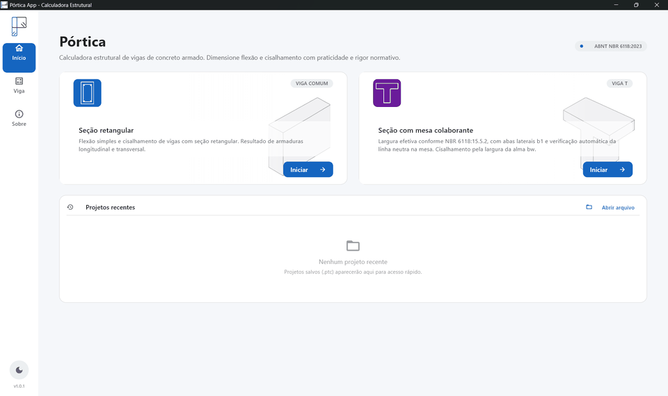
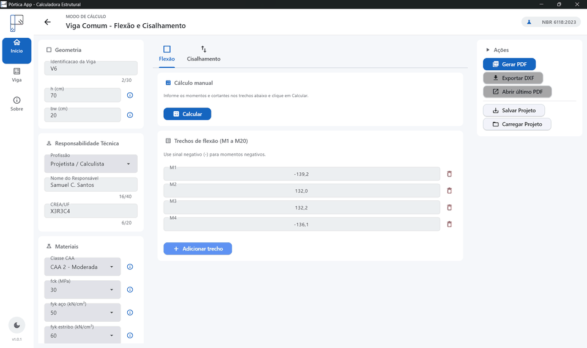
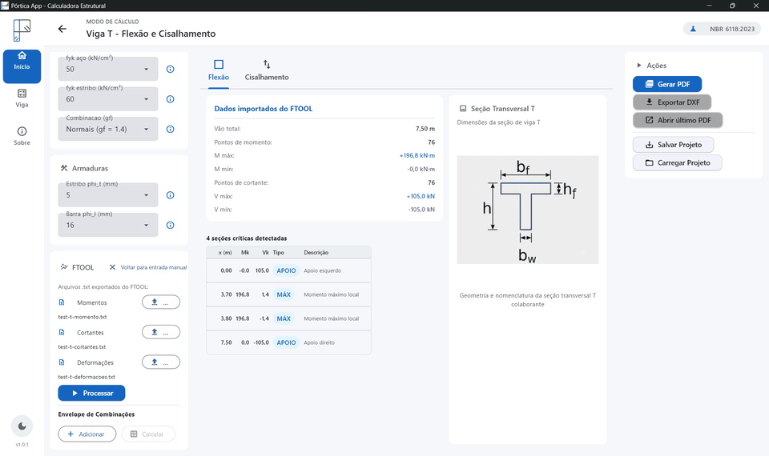
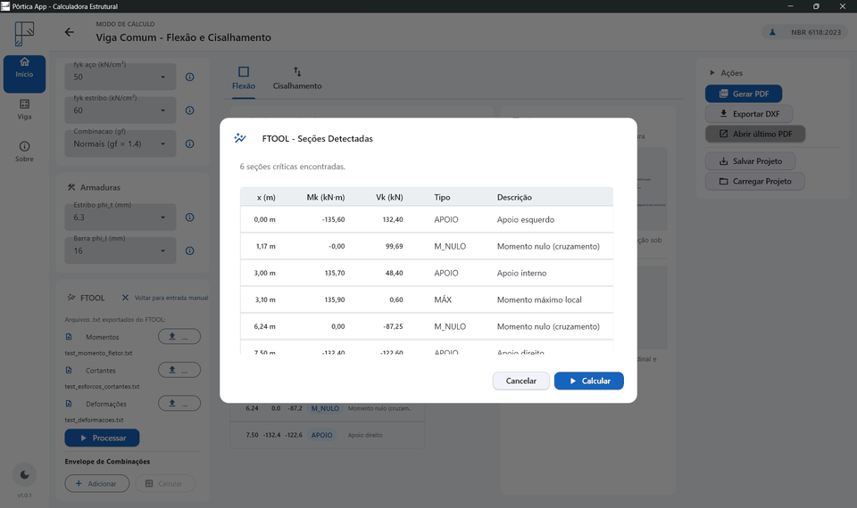
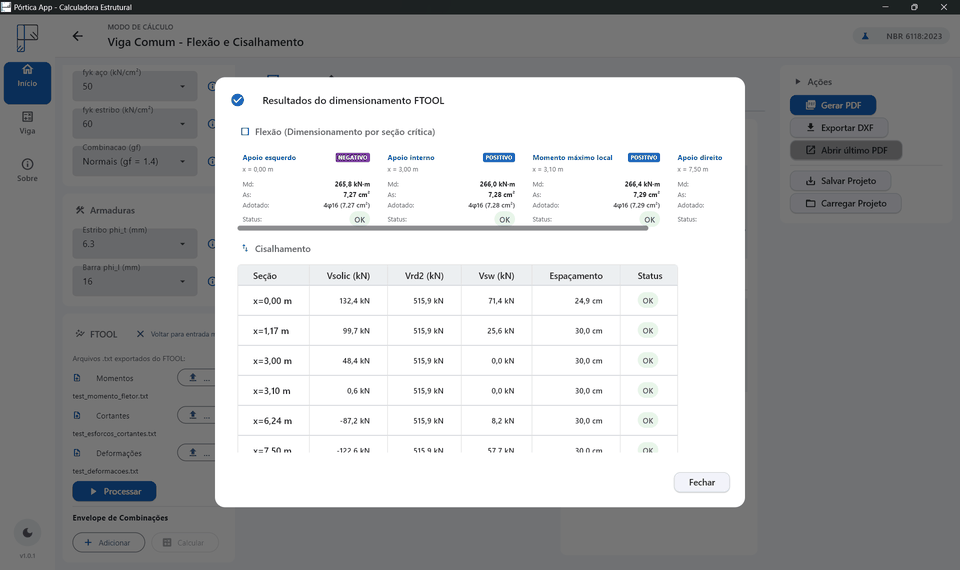
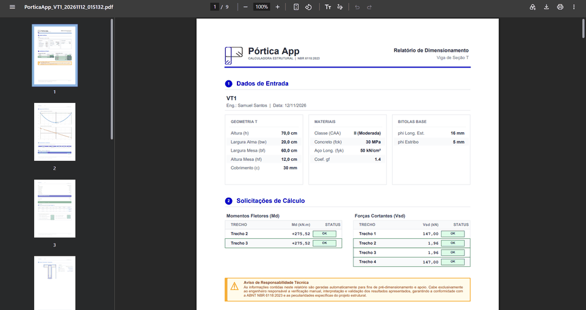
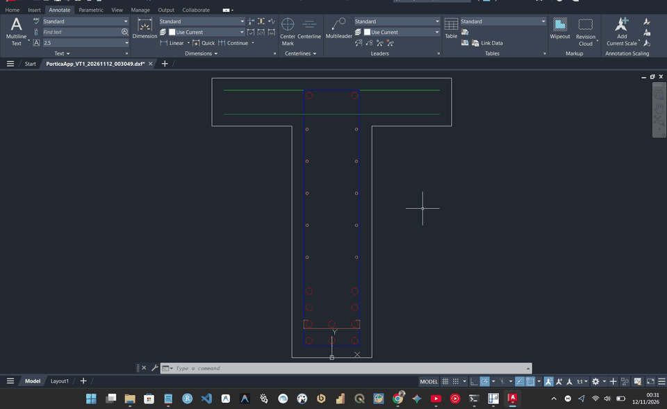
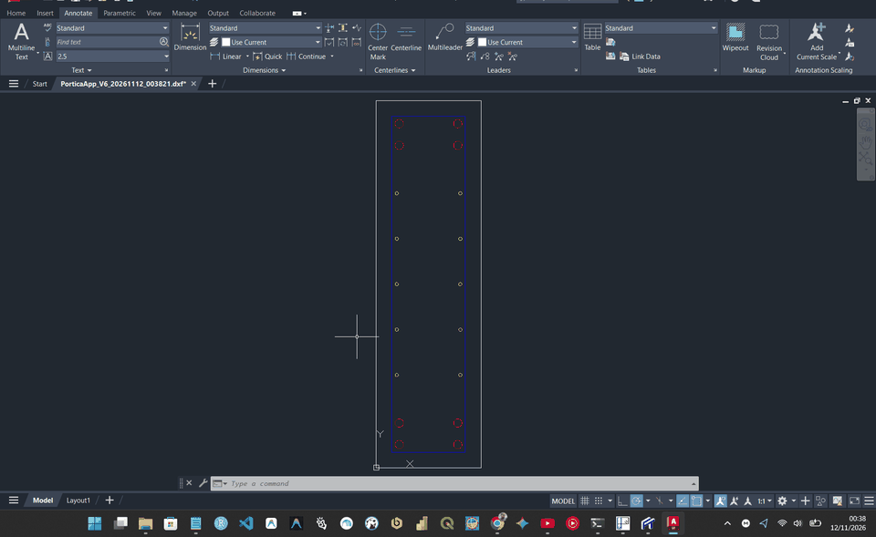
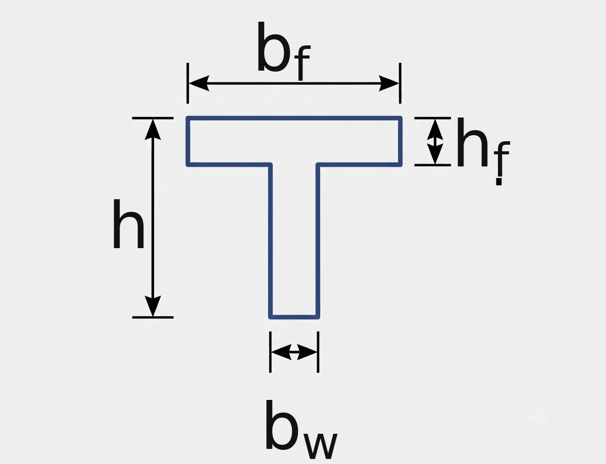

Engenheiros civis
Quem já tem os momentos e cortantes (do FTOOL ou de qualquer análise) e precisa chegar à armadura e ao detalhamento com rastreabilidade.
Software livre · NBR 6118:2023
Calculadora estrutural de vigas de concreto armado: flexão, cisalhamento, armadura dupla, armadura de pele, ELS e detalhamento, com entrada manual ou importação de esforços exportados do FTOOL.

O que é
O Pórtica App dimensiona e detalha vigas de concreto armado (seção
retangular e seção T) a partir dos esforços que o engenheiro já tem:
digitados à mão ou importados dos arquivos .txt exportados
pelo FTOOL. Gera relatório PDF (capa, tabelas, diagramas M(x) e V(x),
esquema da seção e campos de CREA/CAU) e exportação DXF.
É software livre (Apache-2.0), roda no Windows e não exige conta, internet ou instalação de Python para usar o executável.
Para quem é
Quem já tem os momentos e cortantes (do FTOOL ou de qualquer análise) e precisa chegar à armadura e ao detalhamento com rastreabilidade.
Conferir exercícios de concreto armado e visualizar os domínios de deformação, a armadura dupla e a verificação de ELS.
O código está no GitHub e pode ser lido, testado e corrigido. Cálculo estrutural precisa ser auditável.
Funcionalidades
Dimensionamento conforme a ABNT NBR 6118:2023, com saídas prontas para o dia a dia de projeto.
Seção retangular e seção T (mesa colaborante), com verificação dos domínios de deformação.
Modelo I da NBR 6118, com contribuição do concreto e do aço, estribos trecho a trecho.
Capa, dados de entrada, tabelas, diagramas M(x)/V(x), esquema da seção e campos de CREA/CAU.
Solução com armadura de compressão quando o momento excede o limite do domínio 3.
Dimensionamento automático das costelas para vigas com h ≥ 60 cm.
Flecha imediata e diferida por integração numérica da curvatura; abertura de fissuras wk por classe de agressividade.
Desenho da seção R/T com layers e grampos, pronto para o CAD.
Leitura dos .txt exportados (momento, cortante, deformações), seções críticas e dimensionamento automático.
Salvar e carregar o projeto completo: geometria, materiais, esforços e ajustes.
Telas e figuras
As seções de viga que o app dimensiona e as telas principais do aplicativo.









Como usar
O app tem uma única tela de viga, com dois tipos de seção e duas formas de entrada de esforços.
.txt exportados (momento fletor, cortante e deformações).Download
Baixe o pacote completo para rodar 100% offline desde a primeira execução — sem instalador, sem cadastro e sem depender de conexão externa ou rede corporativa.
100% offline desde o 1º uso · Windows 10/11 x64 · v1.1.0
Roda offline desde a primeira execução. Contém portica.exe + SHA256SUMS.txt. Descompacte e execute.
1dc3876b783be5d60b142a4198ccf7fde4b99f389cea16c572dd991ba304a8cc
Prefere um download menor? Use a
variante leve (.exe, 58,2 MB)
— precisa de internet apenas na 1ª execução (baixa ~30 MB do GitHub) e depois abre offline.
SHA-256: a44553852f033c5e61061299bea0393ee5e2a0436a1de372a0c4d45c88444892.
Cálculo estrutural precisa ser auditável: você também pode baixar o código-fonte (v1.1.0 .zip) ou consultar todos os arquivos na aba Releases do repositório.
Ferramenta de apoio
Limitações e responsabilidade
Aviso
O programa não substitui:
O aviso completo está em DISCLAIMER.md, e também aparece na tela Sobre do app e no rodapé de cada página do relatório PDF.
Documentação
O modelo de cálculo tem página própria. Todo o resto (README, mapa do código, changelog, licença e como contribuir) está no repositório.
Fórmulas e critérios da NBR 6118:2023 implementados: flexão, cisalhamento, viga T, armadura dupla, armadura de pele e ELS.
Ler o modeloChangelog · v1.1.0
Correção da reconstrução e sincronização do painel de importação do FTOOL ao carregar arquivos de projeto (.ptc) quando o painel estava recolhido, além da publicação sob licença Apache-2.0 com memória de cálculo PDF, exportação DXF e testes automatizados.
Ver histórico completo no CHANGELOG.md · Baixar o código-fonte (.zip)
Documentação completa no repositório no GitHub: mapa do código, changelog, licença.
Como citar
O software é citável por DOI (Zenodo). Cite o concept DOI, que permanece válido entre versões:
dos Santos, S. C. (2026). Pórtica App: calculadora estrutural de vigas de concreto armado (NBR 6118:2023) (versão 1.1.0) [software]. Zenodo. https://doi.org/10.5281/zenodo.23733497
A referência máquina-legível está no arquivo CITATION.cff.
Perguntas frequentes
Para rodar 100% offline desde a primeira execução, baixe o pacote recomendado .zip (98,2 MB): ele já traz todos os componentes embutidos e funciona imediatamente sem internet ou em redes corporativas restritas. Se preferir um download inicial menor e tiver acesso liberado ao GitHub na primeira abertura, use a variante leve .exe (58,2 MB), que baixa ~30 MB apenas no 1º uso e abre offline nas execuções seguintes. O motor de cálculo, o relatório PDF e a exportação DXF rodam sempre 100% na máquina local.
Os executáveis prontos são para Windows 10/11 x64. O código-fonte é Python (Flet) e, em princípio, roda em Linux/macOS instalando Python 3.10+ e as dependências (pip install -r requirements.txt), mas nesta versão o autor valida oficialmente apenas o Windows.
Complementa. O Pórtica App lê os arquivos .txt exportados pelo FTOOL (momento fletor, cortante e deformações) e faz o dimensionamento e o detalhamento da viga. Não há vínculo ou endosso: "FTOOL" é citado apenas como compatibilidade de formato de arquivo.
Sim, na primeira abertura. Como o projeto é independente e gratuito, o binário não possui certificado comercial de assinatura de código (Code Signing). Quando o Windows Defender SmartScreen exibir o aviso "O Windows protegeu o seu computador", clique em Mais informações e depois em Executar assim mesmo. Você pode auditar o código-fonte no GitHub e conferir a integridade do arquivo pelo hash SHA-256 informado na seção de download (comando Get-FileHash no PowerShell).
Sim. Para computadores de obra, campo ou escritórios sem acesso externo, baixe o pacote recomendado .zip (98,2 MB): ele já inclui o cliente gráfico e não realiza nenhuma conexão de rede nem na primeira execução. Todo o dimensionamento, a leitura de arquivos do FTOOL, o salvamento de projetos .ptc e a geração de PDF e DXF funcionam 100% offline.
O aplicativo é portátil e não modifica o registro do Windows. Para atualizar, basta baixar o novo pacote na seção de download (ou na página de Releases no GitHub) e substituir a pasta ou o executável anterior. Seus arquivos de projeto (.ptc) continuam funcionando normalmente.
O Pórtica App pode ser utilizado como ferramenta de apoio, pré-dimensionamento e verificação independente, mas não substitui o projeto estrutural completo nem o julgamento técnico do profissional. A responsabilidade técnica perante o CREA e a emissão de ART cabem exclusivamente ao engenheiro civil habilitado, que deve conferir as premissas de carregamento, estabilidade global, detalhamento e conformidade com a ABNT NBR 6118:2023. Consulte o termo integral em DISCLAIMER.md e a seção limitações e responsabilidade.
ELS são os Estados-Limites de Serviço da NBR 6118: verificações de desempenho em serviço. O app calcula a flecha (deformação excessiva, imediata e diferida no tempo) e a fissuração (abertura de fissuras wk), comparando com os limites por classe de agressividade ambiental.
Não. Baixe o executável e use normalmente. Python só é necessário para quem quiser rodar (ou modificar) o código-fonte.
Sim, é software livre sob a licença Apache-2.0: você pode usar, estudar e modificar. O uso em projeto é por sua conta e responsabilidade, com verificação por engenheiro habilitado e ART.
Abra uma Issue no repositório do Pórtica App informando a versão do app, os dados de entrada, a saída obtida, o valor esperado e o item correspondente da ABNT NBR 6118:2023. Para relatos privados de segurança ou falhas críticas, utilize a aba Security do projeto conforme o roteiro detalhado em SECURITY.md.
Doar
Doação opcional, sem paywall e sem feature bloqueada. Se o app te economizou uma tarde, ajude a mantê-lo no ar.
Dois jeitos de contribuir, ambos sem cadastro e sem CNPJ:
samuelsantosambiental@gmail.com
Chave Pix (e-mail): samuelsantosambiental@gmail.com